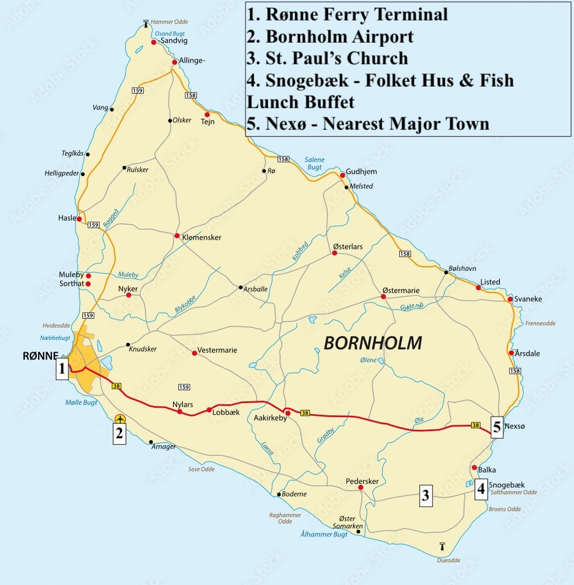

Traveling to Denmark
- Denmark is a safe and friendly destination — a member of the European Union and the Schengen Area, on Central European Time (6 hours ahead of US Eastern).
- Make sure your passport is up to date. At the time of writing, American passport holders don’t need a visa in advance, but please check official guidance before you travel.
- Many U.S. cities fly directly to Copenhagen (CPH). From Michigan you’ll likely connect through another U.S. city. Budget flights via Iceland or Portugal are also common — John and Christina have taken these many times.
- Denmark is very English-friendly, but it’s still worth downloading a translation app. Google Translate can translate text from photos, so you can read signs and documents with your phone’s camera.
Getting to Bornholm (Rønne)

- We recommend flying into Copenhagen (CPH). From there you can either fly to Bornholm or take a bus + ferry. Both bring you to Rønne, the island’s largest town.
- Several direct flights run daily between Copenhagen (CPH) and Rønne (RNN) on DAT, usually around $150 round-trip — you’ll likely book this leg separately. If you didn’t already enter the EU elsewhere, you’ll clear customs in CPH, so budget layover time accordingly (we suggest 2 hours).
- A cheaper but longer option is the Kombardo Expressen bus + ferry: a coach picks you up outside CPH airport (~45 min to the Ystad ferry terminal in Sweden), then a ~1-hour ferry to Rønne. It can continue to Nexø, a couple of miles east of Snogebæk, and also stops in downtown Copenhagen. Not recommended if you have a lot of luggage.


Getting to Snogebæk
Snogebæk sits at the southeastern tip of the island, about a 20-minute drive from Rønne. Public transport on Bornholm is fairly limited — the buses run, but infrequently, especially on weekends — so renting a car is by far the easiest way to get around. If you’d rather not drive, plan taxis ahead and check timetables on the island’s public transport guide.
- By air: from the airport near Rønne, take a taxi or rent a car for the ~20-minute drive southeast to Snogebæk.
- By ferry: if you’re taking the Kombardo bus + ferry and don’t plan to rent a car, book your ticket all the way through to Nexø rather than stopping at Rønne — it’s only a couple of miles from Snogebæk (a short taxi ride), far closer than Rønne on the far side of the island.
- Car rentals: note that most European rentals are manual — request an automatic in advance if you need one.
Where to Stay
Hotel Blomme’s Place
A small 25-room boutique hotel in Snogebæk with comfortable rooms and a relaxing atmosphere. Please note they do not accept guests under 14. We’ve told management to expect wedding guests — if September 2027 dates aren’t bookable online yet, email info@blommesplace.com with your dates and they’ll reserve directly.
Ellegade 9, 3730 Snogebæk
Strandhotel Balka Søbad
A relaxed beachfront hotel set among pine trees right on Balka beach — one of the island’s finest stretches of soft white sand. Rooms sleep up to five (refreshed in 2022), there’s a heated pool with a children’s section, and a coastal path runs along the shore toward Snogebæk. The restaurant serves a daily breakfast buffet and evening menus. A lovely choice for families — children are very welcome.
Hotel Balka Strand
A cozy, family-run hotel a few minutes from the child-friendly Balka beach, tucked between forest and quiet coastline. Choose a double room or a roomier studio or two-bedroom family apartment, and cool off in the pool (newly renovated in 2025). There’s a restaurant and bar on site, free parking and Wi-Fi, and it’s dog-friendly too — another great option for families.
Vacation Rentals
Snogebæk has many rental options. For cost and convenience, we recommend grouping up and sharing accommodations where reasonable.
If you have any other questions about traveling to Denmark, Bornholm, or Snogebæk, please don’t hesitate to reach out to John or Christina.